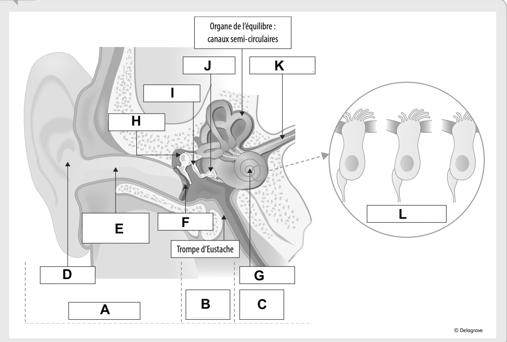
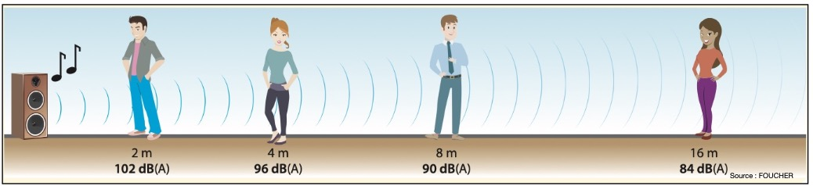

| Compétences | Questions | 1 | 2 | 3 | 4 | Points | Note |
|---|---|---|---|---|---|---|---|
| C2 | 1 – 2 | ☐ | ☐ | ☐ | ☐ | …/4 | .../20 |
| C3 | 3 – 4.1 – 4.2 – 5 | ☐ | ☐ | ☐ | ☐ | …/12 | |
| C4 | 6 | ☐ | ☐ | ☐ | ☐ | …/2 | |
| C6 | Toutes les questions | ☐ | ☐ | ☐ | ☐ | …/2 |
Une exposition régulière à des volumes sonores trop élevés met aujourd'hui en danger l'audition de plus d'un milliard d'adolescents et de jeunes adultes dans le monde. L'écoute au casque ou aux oreillettes, mais aussi la fréquentation de concerts, discothèques et autres lieux de divertissement bruyants, sont directement en cause. Le risque vient surtout de la combinaison de deux facteurs : un volume trop fort et une durée d'exposition trop longue. Or, la perte auditive ne se voit pas et ne fait pas forcément mal : elle peut s'installer progressivement, sans que la personne s'en rende compte, puis finir par gêner la compréhension, la scolarité, la vie sociale et plus tard la vie professionnelle. Dans les environnements très bruyants, l'oreille peut être agressée en peu de temps, et la répétition des expositions peut abîmer durablement les cellules de l'oreille interne. Selon un spécialiste cité par Ouest-France, on estime à environ 1,5 milliard le nombre de personnes présentant déjà des déficits auditifs dans le monde, et plus de 430 millions ont été dépistées et appareillées. Si l'on ajoute le milliard de jeunes exposés à des pratiques d'écoute dangereuses, le nombre de personnes concernées pourrait fortement augmenter dans les années à venir. Préserver son audition est donc un enjeu de santé publique, car une baisse d'audition peut aussi entraîner fatigue, difficultés de concentration, isolement et complications dans les échanges au quotidien.
| Éléments | Description |
|---|---|
| Origine du problème | |
| Public concerné | |
| Conséquences |
De 120 à 140 dB(A) : quelques secondes suffisent à provoquer des dégâts irréversibles.
107 dB(A) : 1 min/jour. 101 dB(A) : 4 min/jour. 95 dB(A) : 15 min/jour. 92 dB(A) : 30 min/jour.
86 dB(A) : 2 h/jour. 83 dB(A) : 4 h/jour. 80 dB(A) : 8 h/jour.
Les deux paramètres de dangerosité du son :
La durée d'exposition avant dommage pour un jeune écoutant son baladeur au niveau sonore maximal (100 dB(A)) :

| A | – |
| B | – |
| C | – |
| D | – |
| E | – |
| F | – |
| G | – |
| H | – |
| I | – |
| J | – |
| K | – |
| L | – |
